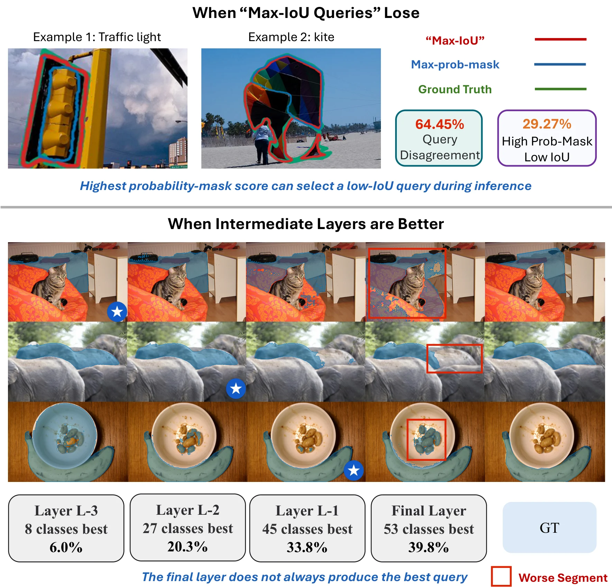
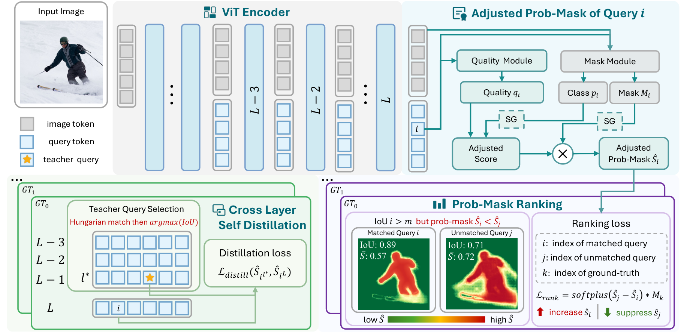
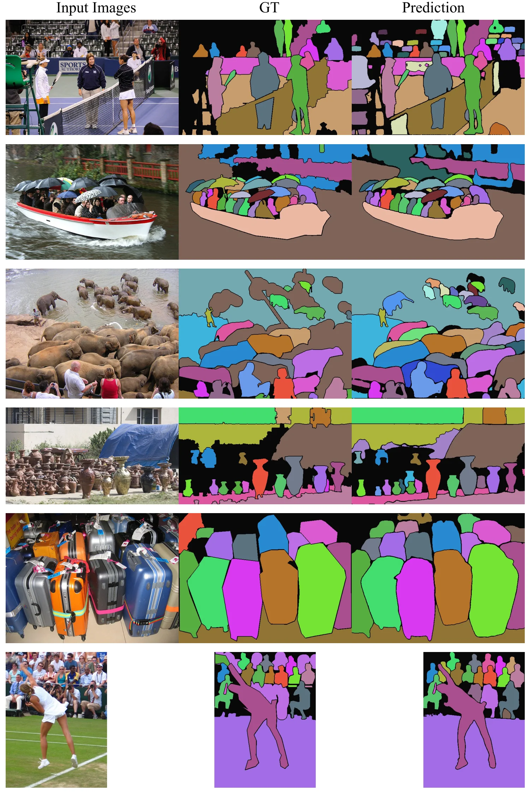
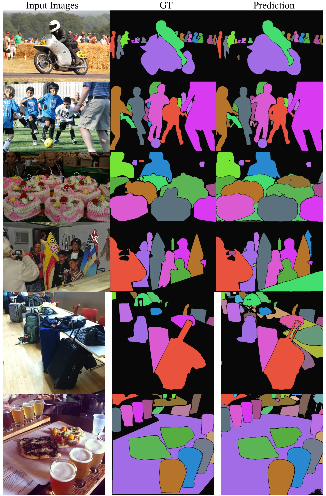
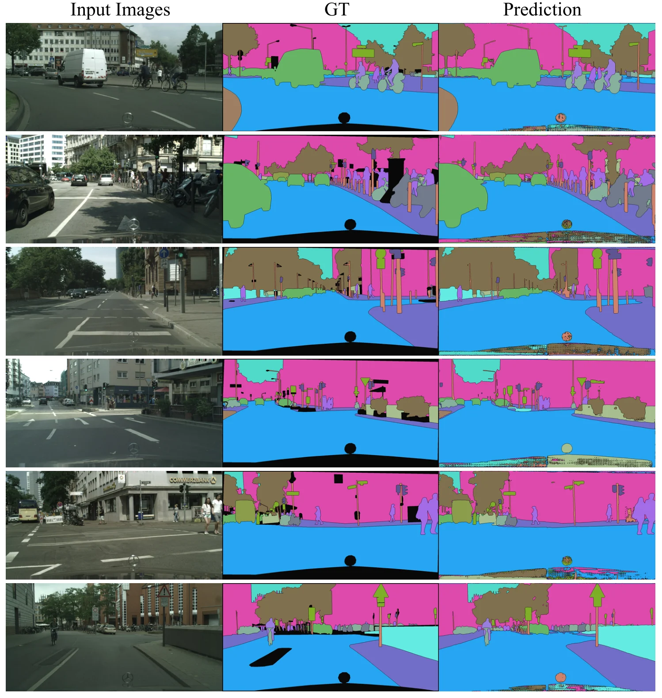
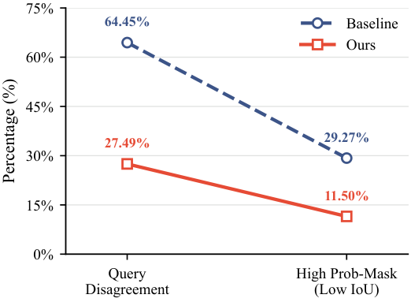
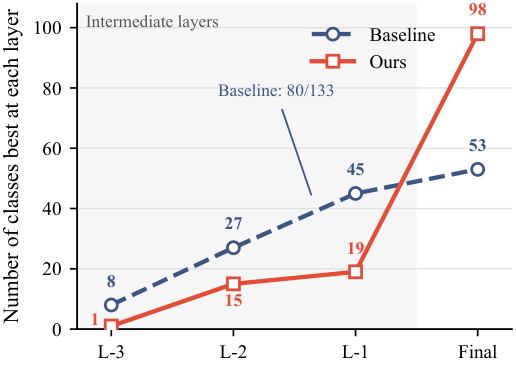

A
Queries compete at inference
Pixels are assigned by score-weighted masks. A confident but inaccurate query can suppress a better-matched one, despite Hungarian matching supervision during training.
64.45% query disagreement
iFAN trains mask transformers the way they are actually used: it aligns query competition with mask quality and transfers stronger intermediate predictions to the final layer—without adding multi-layer inference.
Query-based mask transformers assemble segmentation outputs through pixel-wise competition among query predictions of the final layer, yet this inference process is not explicitly optimized during training. We identify two key mismatches: the query with the highest probability–mask score does not necessarily produce the most accurate mask, and final-layer decoding may discard superior predictions from intermediate layers.
We propose Inference-Aware Learning (iFAN), a general training framework for plain mask transformers. Adjusted Probability-Mask Ranking (APMR) aligns query competition with predicted mask quality and suppresses high-confidence but inaccurate competitors. Cross-Layer Self-Distillation (CLSD) transfers stronger intermediate predictions to the final layer. Both objectives are training-only, so inference retains efficient final-layer decoding.
Across COCO, ADE20K, and Cityscapes, iFAN consistently improves panoptic, instance, and semantic segmentation under different architectures, backbone scales, and input resolutions, with negligible additional parameters, FLOPs, and inference latency.
Pixels are assigned by score-weighted masks. A confident but inaccurate query can suppress a better-matched one, despite Hungarian matching supervision during training.
64.45% query disagreementTraining supervises several decoder layers, but standard inference only reads the final one. Useful evidence learned by an earlier layer may degrade before prediction.
80 / 133 classes peak early
A soft-IoU-supervised quality branch calibrates each query's class score. The ranking objective then teaches the matched query to outrank hard, high-evidence competitors inside its target region.
For each target, iFAN selects an intermediate teacher only when it offers both higher soft-IoU and stronger target-region evidence, then distills that evidence into the final decoder layer.
iFAN improves two plain mask-transformer families across model sizes and resolutions. These are average absolute gains reported over all evaluated configurations.
| Task / dataset | Model | Input | Baseline | iFAN | Gain |
|---|---|---|---|---|---|
| Panoptic · ADE20K | PMT ViT-L | 1280² | 50.5 PQ | 53.0 PQ | +2.5 |
| Panoptic · COCO | EoMT ViT-L | 640² | 56.0 PQ | 57.0 PQ | +1.0 |
| Instance · COCO | EoMT ViT-L | 1280² | 48.8 AP | 50.6 AP | +1.8 |
| Semantic · ADE20K | PMT ViT-L | 512² | 58.5 mIoU | 59.4 mIoU | +0.9 |





If you find this work useful, please consider citing it.
@inproceedings{anonymous2027ifan,
title = {iFAN: Inference-Aware Learning for Plain Mask Transformers},
author = {Anonymous Authors},
booktitle = {Proceedings of the AAAI Conference on Artificial Intelligence},
year = {2027}
}